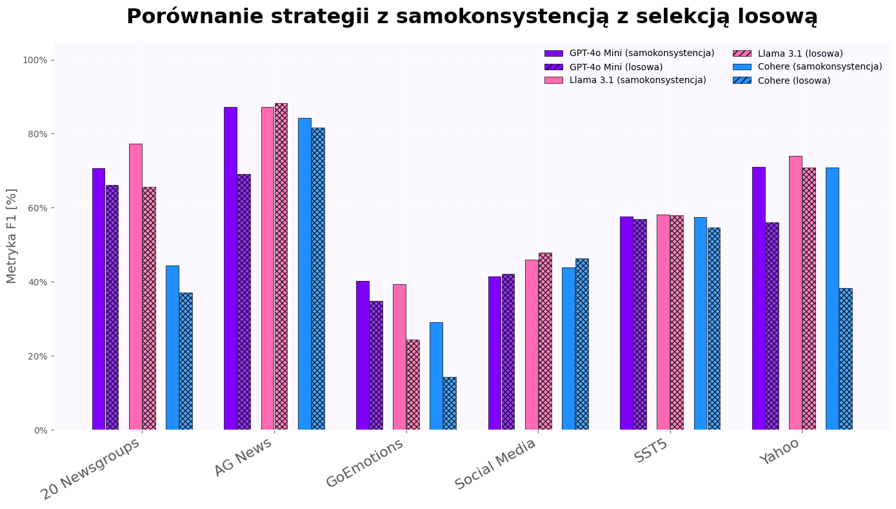
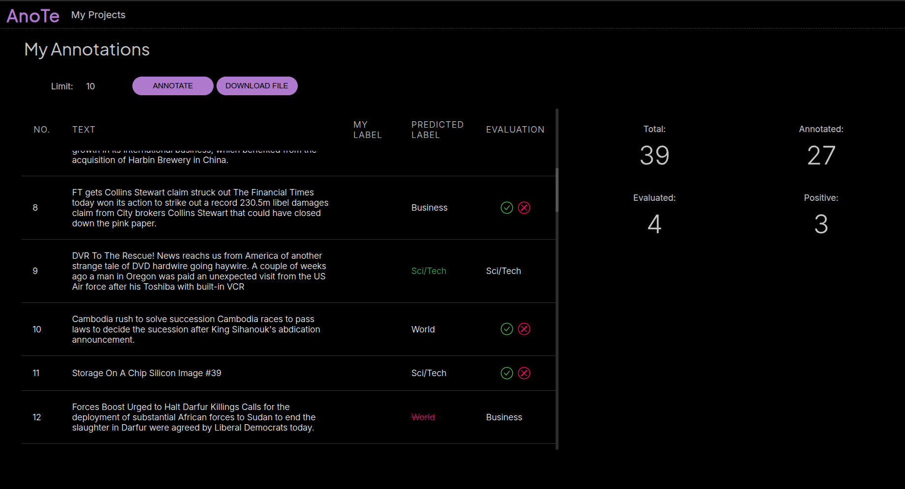

Adaptacyjny system anotacji tekstów z wykorzystaniem dużych modeli językowych
Ręczna anotacja tekstów jest kosztowna, czasochłonna i podatna na błędy. Wymaga wiedzy eksperckiej, co czyni proces trudnym do skalowania. AnoTe rozwiązuje ten problem poprzez adaptacyjny system automatyzacji anotacji z wykorzystaniem dużych modeli językowych.
Selekcja przykładów do pobudzenia ma istotny wpływ na skuteczność dużych modeli językowych w zadaniach anotacji. To, jakie dane zostaną przekazane modelowi jako wzorce może znacząco zmienić jakość jego predykcji, poprawić bądź ją pogorszyć. W ramach projektu zaimplementowano i przetestowano klasyczne jak i autorskie metody. Wśród metod klasycznych uwzględniono strategie oparte na losowość, miary niepewności predykcji modelu oraz techniki z wykorzystaniem łańcuchowego rozumowania. Zbadano również wybór danych o niestabilnej klasyfikacji, tych reprezentatywnych w grafie semantycznym oraz z wykorzystaniem mieszaniny rozkładów normalnych. Eksperymenty przeprowadzono na sześciu zbiorach danych i trzech dużych modelach językowych. Najlepsze wyniki osiągnięto metodą łańcuchowego rozumowania z pięcioma stochastycznymi generacjami dla temperatura 0.3, z których wybierano najczęstszy wariant jako finalną predykcję. Dla większości zbiorów uzyskano poprawę względem metody losowej. Nie znaleziono jednak uniwersalnej strategii selekcji dla każdego przypadku. Potrzebne są metodyczne ramy jej doboru, uwzględniające zadanie, dane i model. Trudnością jest to, że duże modele językowe, są wrażliwe nawet na drobne zmiana pobudzenia, które nie mają znaczenia dla człowieka, a prowadzą do istotnych zmian w wyniku modelu.
Wykorzystano techniki takie jak SHAP, okluzja oraz mechanizmy samowyjaśniające. Umożliwiają one wgląd w logikę działania modelu, zwiększając zaufanie użytkownika oraz identyfikację potencjalnych błędów lub uprzedzeń modelu.
wyniki badań zostały zintegrowane w aplikacji umożliwiającej anotację dowolnego zbioru tekstowego wybranymi etykietami. Aplikacja proponuje użytkownikowi przykłady do ręcznej anotacji, pozwala generować wyjaśnienia dla dowolnej instancji oraz oceniać predykcje modelu. Poprawione przykłady automatycznie trafiają do zestawu pobudzeń.
Wykorzystanie łańcuchowego rozumowania okazuje się nie tylko skutecznym narzędziem wspierającym proces anotacji, ale także kluczowym elementem poprawiającym wyjaśnialność działania dużych modeli językowych. Dzięki temu możliwe jest lepsze zrozumienie decyzji podejmowanych przez model oraz zwiększenie zaufania do generowanych wyników. Mimo imponującego potencjału LLM – zarówno w zakresie rozumienia kontekstu, jak i adaptacji do złożonych zadań językowych – nie można pomijać ich ograniczeń. Modele te wciąż mogą generować błędy, wymagać nadzoru eksperckiego oraz działać w sposób nieprzewidywalny w niektórych scenariuszach. Właśnie dlatego ich wykorzystanie w kontekście anotacji wymaga podejścia świadomego, elastycznego i krytycznego – takiego, które łączy możliwości technologiczne z odpowiedzialnością badawczą i praktyczną ostrożnością. Tylko wtedy potencjał LLM może być realnie i bezpiecznie wykorzystany w procesach przetwarzania i rozumienia języka.